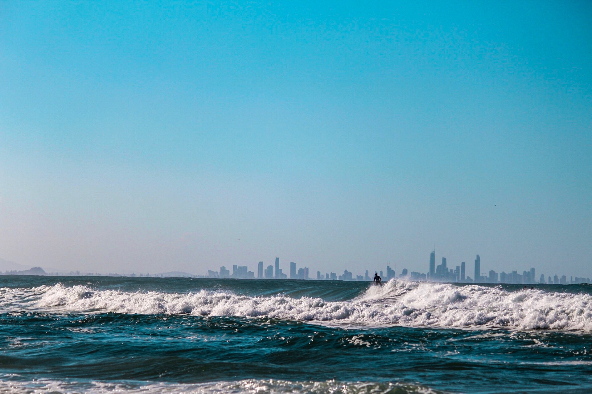

jquery.tiltedpage_scroll.js
tiltedpage_scroll.css
Visiting the Gold Coast
 You’d be forgiven for thinking the Gold Coast was just one endless stretch of sand, broken up by a few forested headlands, blue-water estuaries, and plenty of bronzed lifeguards.
This much is true, though it also comprises a whole string of beaches and adjacent neighbourhoods, each with their own character and quirks.
While Surfers Paradise is the poster child, we want you to venture further out and experience all the pockets that make up this stunning holiday destination.
To help you in your mission, here’s a round-up of some of our favourite spots to throw down a towel – all rolled into this handy guide to the Gold Coast’s best beaches.
...